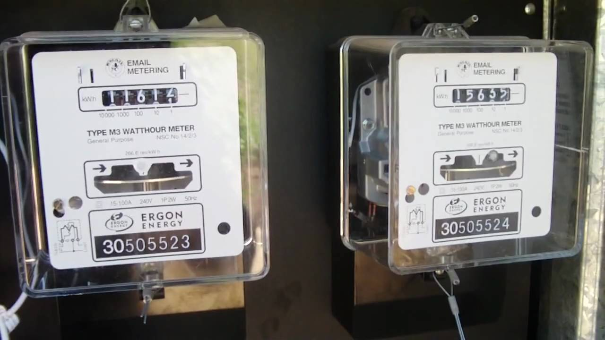

The Meter
The metre [French spelling], or meter [English spelling] (symbol: m) is the SI base unit of length. It is defined as the length of the path travelled by light in absolute vacuum during a time interval of 1/299,792,458 of a second.
Adding SI prefixes to metre creates multiples and submultiples; for example kilometre (1000 metres; kilo- = 1000) and nanometre (one billionth of a metre; nano- = 1 / 1 000 000 000).
Conversion
1 metre is equivalent to:
exactly 1/0.9144 yards (approximately 1.0936 yards)
exactly 1/0.3048 feet (approximately 3.2808 feet)
exactly 10000/254 inches (approximately 39.370 inches)
Hisrory
In 1668 the English cleric and philosopher John Wilkins proposed in an essay a decimal-based unit of length, the universal measure or standard based on a pendulum with a two-second period. The use of the seconds pendulum to define length had been suggested to the Royal Society in 1660 by Christopher Wren. Christiaan Huygens had observed that length to be 38 Rijnland inches or 39.26 English inches; that is, 997 mm. No official action was taken regarding these suggestions.